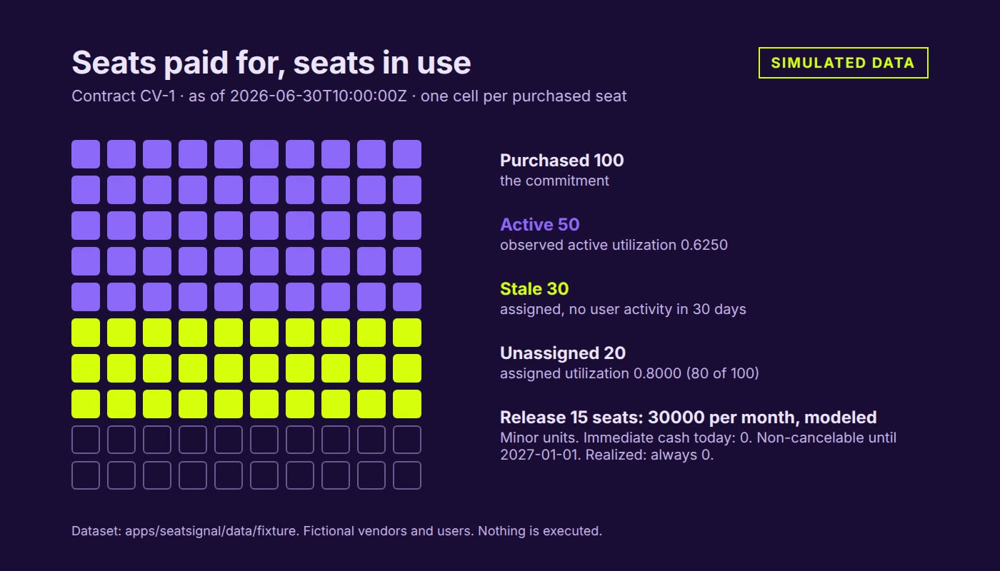

Dashboard · SaaS licensing · Renewal planning · FastAPI · React · 2026-11
Which Software Seats Can Safely Be Released at Renewal, and What Is That Worth in Cash?
SeatSignal: a synthetic SaaS seat reconciliation and renewal planner. It reconciles purchased, assigned and active seats per contract version, shows missing telemetry as unknown instead of inactive, keeps owner exceptions as append-only evidence, and separates the modeled value of releasing seats from the cash a committed floor and a non-cancelable date allow. Nothing is executed. Nothing here is real data.

Everything is synthetic: 22 invented applications, 23 contract versions and every figure come from a hand-specified fixture checked against an independent Python reference. A modeled opportunity is never realized: no account is removed and no contract is cancelled. The static demo computes in the browser; the API and database run in CI only and are not hosted. The web does not create proposals or reviews, the renewal calendar is empty because the fixture has no renewal window, and the entitlement table is loaded but unused in the cost plan. The last independent audit listed these as open.
01 — The problem
Counting inactive seats overstates a saving. A gap in the usage feed looks like inactivity, service and shared accounts are not unused, and a committed or locked-in contract does not shrink when one account is deleted today.
02 — What I built
Ten seat classes with a first-match rule, unknown coverage kept as unknown, frozen reclaim proposals with one owner decision per line, append-only exceptions, and a split between opportunity per billing interval and recoverable seats under the committed floor and the non-cancelable date. A renewal quantity scenario checks the floor and costs the plan, and an Excel workbook recomputes the figures from the rows.
03 — How it was built
- 01
The decision and the contract
One contract fixes the row sets, the classes, the 30 day window, the money rules and the error codes, and says what is out of scope: deprovisioning, cancellation notices, FX and real identity connectors.
- 02
A hand fixture first
100 seats purchased, 80 assigned, 50 active, 15 released: 0.8000, 0.6250 and 30000 per interval, with 0 recoverable until the lock-in ends. 44 case ids assert it and its boundaries, including real two-session races.
- 03
An independent reference
A stdlib-only Python calculator derives every class and figure from the rows. PostgreSQL, the browser engine and Excel are each compared with it; the engine matches byte for byte on 23 contract versions at every case instant.
- 04
Opportunity versus cash
With a floor of 90 and 15 seats released, 10 seats are recoverable after the lock-in, 20000 per interval from 2027-02-01. An annual price of 23999 gives 359985 = 12 x 29998 + 9.
- 05
Evidence
168 browser tests pass, axe finds no violation in 21 route and state files, Lighthouse accessibility is 100 on the landing page and the workspace. The workbook recalculates 6,656 formula cells with 1,273 of 1,273 reconciliation differences exactly 0.
04 — Results
Measured on the synthetic release candidate (commit 67e4dc5): manifest 48 cases with 0 failures (SQL 43 pass and 1 partial of 44, API 11 pass and 4 partial of 15), 35 API tests, 66 unit tests, 184 browser tests. These describe generated data and this code; they say nothing about any real license estate or saving.
05 — What I'd do next
- Publish the static demo and re-read the mobile compositions.
- Renewal windows in the web fixture, and the entitlement side of the cost plan.
- Independent review of the motion recording and frame pacing.